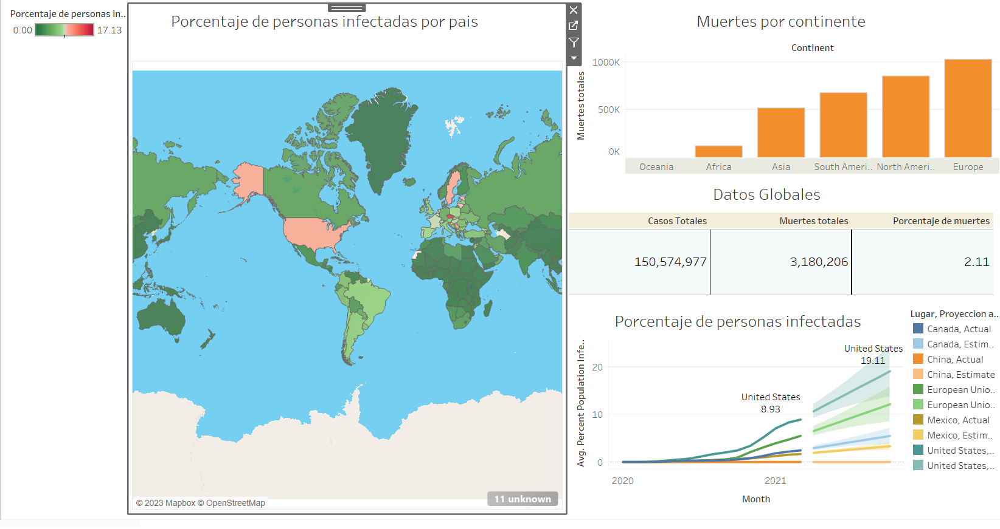
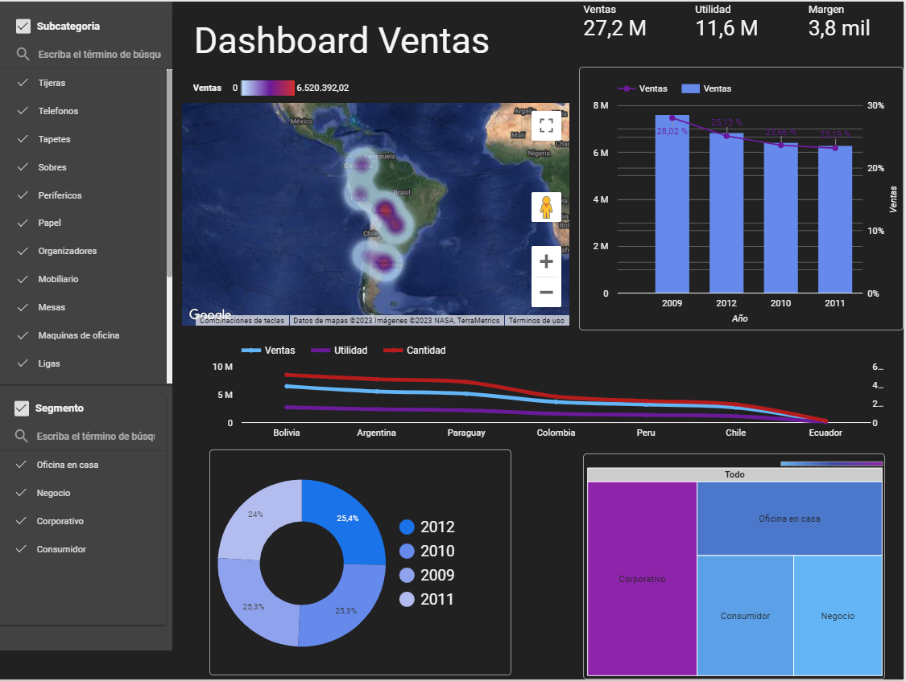

Se recopilan los datos del covid obtenidos del proyecto de analisis en SQL, para representar cifras en tablas, gráficas, mapas interactivos y proyecciones futuras
Se obtuvo una base de datos que muestra información de peliculas, como su presupuesto, sus ganancias en taquilla, género, compañia, etc, graficando y mostrando la información de maneras distintas

Se visualizaron los datos de ventas de una empresa de varios productos diferentes, para saber cual fue el rendimiento de sus ventas en diferentes años, así como la cantidad de ventas que tuvo en diferentes paises y así saber quienes son sus mejores clientes
Se procedió a limpiar datos extraidos de una base de datos, que contiene información de ventas de bienes raices, como poner ciertos datos en el mismo formato, filtrando información incompleta y acomodando las tablas de tal forma que sea más sencillo y eficiente manipular datos